소음진동산업기사 (2010-05-09 기출문제)
1과목: 소음진동개론
1. 음압의 실효치가 0.27N/m2인 음의 음압레벨(SPL)은?
- 82.6dB
- 87.5dB
- 92.1dB
- 97.5dB
(정답률: 알수없음)

2. 발음원이 이동할 때 그 진행방향 쪽에서는 원래 발음원의 음보다 고음으로, 진행 반대쪽에서는 저음으로 되는 현상을 무엇이라 하는가?
- Ohm-Helmholtz 현상
- Beat 현상
- Binaual 현상
- Doppler 현상
(정답률: 알수없음)
3. 소음의 평가척도에 관한 설명으로 가장 거리가 먼 것은?
- 소음통계레벨(LN)은 전체 측정기간 중 그 소음레벨을 초과하는 시간의 총합이 N%가 되는 소음레벨을 말하며, 이 %값이 낮을수록 큰 레벨을 나타낸다.
- 소음공해레벨(LNP)은 등가소음레벨과 소음레벨의 변동에 의해 발생하는 불만의 증가치를 합하여 표현하는 척도이다.
- NC(noise criteria)는 공조기 소음 등과 같은 실내소음을 평가하기 위한 척도이다.
- NEF(noise exposure forecast)는 도로교통소음평가에 이용되는 것으로 이 값이 74 이상이면 보통 주민의 50% 이상이 불만을 호소한다.
(정답률: 알수없음)
4. 음과 관련한 다음 용어 설명 중 가장 적합한 것은?
- 진폭은 진동하는 입자에 의해 발생하는 펻균변위치를 말하고, 음파에 의한 공기 입자의 진동진폭은 상당히 커서 수십~수천 cm 정도이다.
- 입자속도는 시간에 대한 입자변위의 적분값으로 표시된다.
- 고유음향임피던스는 주어진 매질에서 음압에 대한 입자속도의 비를 말하며, 매질의 밀도를 전파속도로 나눈 값이다.
- 주기는 한 파장이 전파하는 데 소요되는 시간을 말한다.
(정답률: 알수없음)
5. PWL 80dB인 기계 2대와 PWL 85dB인 기계 2대가 동시에 가동될 때 PWL의 합은?
- 87dB
- 89dB
- 92dB
- 95dB
(정답률: 알수없음)
6. 주변이 고정된 얇은 금속원판의 두께를 1mm에서 2mm로, 원판의 반경을 10mm에서 20mm로 하면 기본음의 주파수는 어떻게 변화하겠는가? (단, 기타조건은 일정)
- 원래의 1/2로 된다.
- 변화없다.
- 원래의 2배로 된다.
- 원래의 4배로 된다.
(정답률: 알수없음)
7. 공장내의 지면에 송풍기가 있는데 그 소음이 10m 떨어진 곳에서 68dB이다. 이것을 60dB로 하려면 송풍기를 얼마만큼 더 이동시켜야 하는가?
- 7.8m
- 15.1m
- 21.6m
- 28.5m
(정답률: 알수없음)
8. 변동이 심한 소음을 평가하기 위한 등가소음레벨(dB(A))의 표현식으로 옳은 것은? (단, Li:i번째 소음레벨, fi:일정 소음레벨 Li의 지속시간율이며, 소음레벨은 5개 값으로 산출되었음)
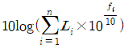
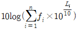
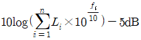
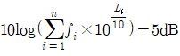
(정답률: 알수없음)
9. 다수의 음원이 공간적으로 산재하고 있을 때 그 안에 특정한 음원, 예를 들어 특정인의 음성에 주목하게 되면 여러 음원으로부터 분리되어 특정음만 들리게끔 되는 심리현상을 일컫는 현상으로 가장 적합한 것은?
- 스넬효과
- 웨버-훼이너효과
- 맥놀이효과
- 칵테일파티효과
(정답률: 알수없음)
10. 지표면에 무지향성 점음원으로 볼 수 있는 소음원이 있다. 출력을 원래의 1/2로 하고 거리를 2배로 멀어지게 하면 음압레벨은 원래보다 몇 dB 감소하는가?
- 3dB
- 6dB
- 9dB
- 12dB
(정답률: 알수없음)
11. 벽체의 투과손실이 20dB일 때, 입사음 세기를 1로 하면 투과음 세기는?
- 1/10
- 1/100
- 1/1000
- 1/10000
(정답률: 알수없음)
12. 무지향성 점음원이 자유공간에 있을 때, 음압레벨(SPL)과 음향파워레벨(PWL)과의 관계식으로 옳은 것은? (단, r은 음원으로부터의 거리)
- SPL=PWL-10×log(4πr2)
- SPL=PWL+10×log(4πr2)
- SPL=PWL-20×log(4πr2)
- SPL=PWL+20×log(4πr2)
(정답률: 알수없음)
13. 다음은 인체의 청각기관에 관한 설명이다. ()안에 알맞은 것은?
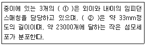
- ① 유스타키오관, ② 세반고리관
- ①세반고리관 , ② 유스타키오관
- ① 청소골, ② 달팽이관
- ① 달팽이관. ② 청소골
(정답률: 알수없음)
14. 음의 용어 및 성질에 관한 설명으로 옳지 않은 것은?
- 음선(soundray):음의 진행방향을 나타내는 선으로 파면(wave front):파동의 위상이 같은 점들을 연결한 면이다.
- 파면(wave front):파동의 위상이 같은 점들을 연결한 면이다.
- 발산파(diverging wave):음원으로부터 거리가 멀어질수록 더욱 넓은 면적으로 퍼져나가는 파를 말한다.
- 정재파(standing wave):공중에 있는 점음원과 같이 음원에서 모든 방향으로 동일한 에너지를 방출할 때 발생하는 파를 말한다.
(정답률: 알수없음)
15. 15℃ 공기중에서 직경 6.6cm, 길이 5.5m인 양단 개구관의 공명 기본음 주파수는?
- 12.9Hz
- 15.5Hz
- 25.8Hz
- 30.9Hz
(정답률: 알수없음)
16. 다음 중 PNL을 기준단위로 하여 항공기 문항회수를 보정한 NNI(noise and number index) 산정식으로 가장 적합한 것은? (단,
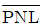
: 1일 중 총 항공기 토오가시에 PNL의 파워평균, N:1일 중 총 항공기 이착률 회수)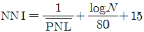
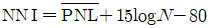
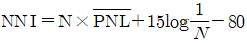
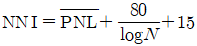
(정답률: 알수없음)
17. 기온이 20℃인 거실에 걸린 시계추가 100Hz로 단진동 할 때, 시계추에 의해 발생되는 음파의 파장은?
- 1.25m
- 2.34m
- 3.43m
- 4.52m
(정답률: 알수없음)
18. 다음 음장에 관한 설명 중 가장 거리가 먼 것은?
- 확산음장:밀폐된 실내의 모든 표면에서 입사음이 거의 100% 반사된다고 할 때 실내의 모든 위치에서 음에너지 밀도가 일정한 음장
- 잔향음장:음원의 직접음과 벽에 의한 반사음이 중첩되는 구역의 음장
- 근음장:입자속도는 음의 전파방향과 개연성이 없고, 위치에 따라 음압변동이 심하고, 음원의 크기, 주파수, 방사면의 위상에 크게 영향을 받는 음장
- 자유음장:근음장에 속하며 역 2승법칙이 만족되는 자유스런 음장
(정답률: 알수없음)
19. 다음 중 단위를 데시벨(dB)로 사용하지 않는 것은?
- Sound intensity Level
- Sound Pressure Level
- Sound Power Level
- Sound Loudness Level
(정답률: 알수없음)
20. 음압이 100배로 증가하면 음압레벨은 몇 dB 증가하는가?
- 10dB
- 20dB
- 40dB
- 100dB
(정답률: 알수없음)
2과목: 소음진동 공정시험 기준
21. 등가소음도 측정기록 시 소음도가 50~55dB(A)일 때
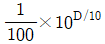
값은?- 0.562×102
- 0.178×103
- 0.562×103
- 0.178×104
(정답률: 알수없음)
22. 발파진동 측정방법으로 가장 거리가 먼 것은?
- 진동픽업의 연결선은 잡음 등을 방지하기 위하여 지표면에 일직선으로 설치한다.
- 요일별로 진동 변동이 적은 평일(월요일부터 금요일사이)에 당해지역의 진동을 4지점 이상의 측정지점수에서 측정하여야 한다.
- 진동레벨계의 감각보정회로는 별도 규정이 없는 한 V특성(수직)에 고정하여 측정하여야 한다.
- 진동레벨계와 진동레벨기록기를 연결하여 측정ㆍ기록하는 것을 원칙으로 하되, 진동레벨계만으로 측정할 경우에는 최고 진동레벨이 고정(hold)되는 것이 한한다.
(정답률: 알수없음)
23. 다음 중 소음의 환경기준 측정방법으로 옳은 것은?
- 손으로 소음계를 잡고 측정할 경우 소음계는 측정자의 몸으로부터 30cm 이상 떨어져야 한다.
- 풍속이 5m/sec 이상일 경우에는 방풍망을 부착하여 측정하여야 한다.
- 소음계의 마이크로폰은 측정위치에 받침장치를 설치하여 측정하는 것을 원칙으로 한다.
- 진동이 많은 장소 또는 정자장의 영향을 받는 곳에서 측정하는 것을 원칙으로 한다.
(정답률: 알수없음)
24. 도로교통 진동한도 측정방법으로 옳지 않은 것은?
- 측정점은 피해가 예상되는 자의 부지경계선 중 진동레벨이 높을 것으로 예상되는 지점을 택하여야 한다.
- 진동레벨기록기를 사용하여 측정할 경우 기록지상의 지시치에 변동이 없을 때에는 구간내 최대치부터 진동레벨의 크기순으로 10개를 산술평균한 진동레벨을 그 지점의 측정진동레벨로 정한다.
- 지정된 각 측정지점에서 4시간 이상 간격으로 2회 이상 측정하여 산술평균한 값을 측정진동레벨로 한다.
- 진동레벨계의 감각보정회로는 별도 규정이 없는 한 V특성에 고정하여 측정하여야 한다.
(정답률: 알수없음)
25. 소음진동환경오염공정시험기준에서 정한 소음측정기기의 성능기준 중 측정가능 주파수 범위기준으로 옳은 것은?
- 8~31.5kHz 이상
- 31.5~8000kHz 이상
- 35~130kHz 이상
- 45~130kHz 이상
(정답률: 알수없음)
26. 아래 소음계의 기본구조 구성도에서 간이소음계인 경우 필요하지 않는 구성은?
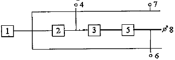
- 4
- 6
- 7
- 8
(정답률: 알수없음)
27. 단조공장 부지경계선에서 소음을 측정한 결과 측정소음도가 81dB(A), 배경소음도가 75dB(A)로 각각 나타났다. 이 때의 대상소음도(dB(A))는?
- 81 dB(A)
- 80 dB(A)
- 79 dB(A)
- 78 dB(A)
(정답률: 알수없음)
28. 소음진동환경오염공정시험기준상 “도로교통진동 측정자료 평가표” 서식에 기재되어야 하는 항목으로 가장 거리가 먼 것은?
- 차선길이
- 차선수
- 도로유형
- 대형차 통행량(대/hr)
(정답률: 알수없음)
29. 다음 중 마이크로폰 감도(S)의 정의식으로 옳은 것은?
- S=기계적 출력/전기적 입력
- S=전기적 출력/기계적 입력
- S=기계적 입력/전기적 출력
- S=전기적 입력/기계적 출력
(정답률: 알수없음)
30. 발파진동 측정 시 주간 시간대와 심야 시간대의 범위기준으로 옳은 것은?
- 주간-06:00~22:00, 심야-22:00~06:00
- 주간-07:00~21:00, 심야-21:00~07:00
- 주간-08:00~22:00, 심야-22:00~08:00
- 주간-09:00~21:00, 심야-21:00~09:00
(정답률: 알수없음)
31. 소음계의 지시계기 중 지침형의 유효지시 범위기준은 ① 몇 dB 이상으로 하고 1dB 눈금간격이 ② 몇 mm 이상으로 표시되어야 하는가?
- ① 15dB, ② 1mm
- ① 1dB, ② 10mm
- ① 15dB, ② 10mm
- ① 1dB, ② 1mm
(정답률: 알수없음)
32. 소음계만으로 측정하여 계산한 등가소음도가 52dB(A)이고 지침이 지시판 위쪽을 벗어난 백분율이 12%일 때 등가소음도 보정방법으로 옳은 것은?
- 구해진 등가소음도 값에 2dB(A)를 더해준다.
- 구해진 등가소음도 값에 2dB(A)를 뺴준다.
- 구해진 등가소음도 값에 3dB(A)를 더해준다.
- 구해진 등가소음도 값에 3dB(A)를 뺴준다.
(정답률: 알수없음)
33. 다음 중 발파진동 평가시 시간대별 평균방파 횟수(N)에 따른 보정량으로 옳은 것은? (단, N＞1)
- +100logN
- +20log(N)2
- +10log(N)2
- +10logN
(정답률: 알수없음)
34. 다음 중 진동측정기기의 성능기준으로 옳지 않은 것은?
- 측정가능 주파수 범위는 1~90Hz 이상이어야 한다.
- 측정가능 진동레벨의 범위는 55~120 dB이상이어야 한다.
- 진동픽업의 휨감도는 규정주파수에서 수감축 감도에 대한 차이가 15dB 이상이어야 한다.(연직특성)
- 레벨렌지 변환기가 있는 기기에 있어서 레벨렌지 변환기의 전환오차가 0.5dB 이내ㅐ이어야 한다.
(정답률: 알수없음)
35. 1시간동안 측정한 철도소음의 최고평균소음도가 83db(A), 1시간동안 열차 통행량(왕복대수)이 25대 일 때, 대상지점에 대한 열차의 1시간 등가소음도는? (단, 배경소음과 철도의 최고소음의 차이는 10dB 이하)
- 약 97dB(A)
- 약 83dB(A)
- 약 70dB(A)
- 약 64dB(A)
(정답률: 알수없음)
36. 진동레벨계의 성능 중 감각특성의 상대응답과 허용오차에 대해 규정한 규격은?
- KSC-1502
- KSC-1507
- KSF-28⑤
- KSF-2808
(정답률: 알수없음)
37. 진동픽업의 종류 중 저렴한 장점은 있으나, 전동기, 변압기, 변전성비 부근 등 자장이 강하게 형성된 장소에서 측정 시 자장의 영향으로 진동측정이 부적합한 것은?
- 동전형
- 압전형
- 압축혈
- 접촉형
(정답률: 알수없음)
38. 1일 동안 평균 최고소음도가 102dB(A), 1일간 항공기등같총과횟수가 555일 경우 1일 단위의 WEGPNL은?
- 약 96dB(A)
- 약 99dB(A)
- 약 102dB(A)
- 약 106dB(A)
(정답률: 알수없음)
39. A공장의 측정소음도와 배경소음도의 차가 3dB(A)이었다면 배경소음의 영향에 대한 보정치dB(A))는?
- -1
- -2
- -3
- 0
(정답률: 알수없음)
40. 표준음 발생기의 발생음의 오차범위기준으로 적합한 것은?
- ±1 dB이내
- ±2 dB이내
- ±3 dB이내
- ±5 dB이내
(정답률: 알수없음)
3과목: 소음진동방지기술
41. 추를 코일스프링으로 매단 1자유도 진동계에서 추의 질량을 2배, 스프링의 강도를 4배로 할 경우 작은 진폭에서 자유진동의 주기는 어떻게 변화되겠는가?
- 원래의 √1/2로 된다.
- 원래의 1/2로 된다.
- 원래의 √2로 된다.
- 원래의 2배로 된다.
(정답률: 알수없음)
42. 고무절연기 위에 설치된 기계가 900rpm에서 20%의 전달률을 가진다면 평형상태에서 절연기의 정적처짐을 얼마인가?
- 0.45cm
- 0.56cm
- 0.66cm
- 0.74cm
(정답률: 알수없음)
43. 비중 2.25인 22cm 두께의 단일벽체에 500Hz 순음이 수직입사할 경우 벽체의 투과손실은?
- 48 dB
- 53 dB
- 65 dB
- 71 dB
(정답률: 알수없음)
44. 아래 그림의 단진자 진동 주기에 관한 설명 중 옳은 것은? (단, 각 진폭 θmax는 대단히 작다.
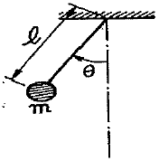
- 길이에 ℓ에 무관하다.
- 질량 m에 무관하다.
- 중력 가속도에 무관하다.
- 천장재질에 따라 달라진다.
(정답률: 알수없음)
45. 가로×세로×높이가 각각 7m×5m×3m인 실의 평균 흡음률이 0.03일 경우, 이 실의 잔향시간은? (단, Sabine식을 이용)
- 1.5초
- 2.5초
- 4초
- 6초
(정답률: 알수없음)
46. 상하 각각 0.2mm를 5Hz로 정현진동하는 지면의 진동 가속도레벨(dB)은? (단, 기준 10-5m/s2)
- 약 74
- 약 77
- 약 80
- 약 83
(정답률: 알수없음)
47. 1자유도진동계에서 f/fn비와 진동전달율에 관한 설명으로 옳은 것은?
- f/fn=0일 때 전달율은 최대이다.
- f/fn＞√2일 때 전달력은 항상 외력보다 크다.
- f/fn=1일 때 전달력은 외력과 같다.
- f/fn＜√2일 때 감쇠비가 커질수록 전달율이 적어지므로 방진상 감쇠비가 클수록 좋다.
(정답률: 알수없음)
48. 중량이 30N, 스프링 정수 19N/cm, 감쇠계수 0.15ㆍs/cm인 진동계의 감쇠비는?
- 약 0.1
- 약 0.6
- 약 0.9
- 약 1.0
(정답률: 알수없음)
49. 소음 등의 제어를 위한 자재류의 특성으로 옳지 않은 것은?
- 차음재는 상대적으로 경량(25~100kg/m2)이며, 음의 투과를 증가시킨다.
- 소음기는 기체의 정상흐름 상태에서 음에너지를 변환시키는 장치이다.
- 다공질 흡음재는 내부통로를 가진 다공성 자재로 실내음의 에너지저감 등에 이용된다.
- 제진재는 상대적으로 큰 내부손실을 가진 신축성이 있는 점탄성 자재이다.
(정답률: 알수없음)
50. 그림과 같은 진동계의 총 스프링상수(kt)는?
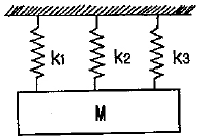
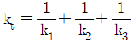
- kt=k1+k2+k3
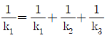
- kt=k1×k2×k3
(정답률: 알수없음)
51. 방진고무 1개에 대한 하중이 200N이며, 그 때의 정적처짐은 10mm이다. 이 방진고무의 동적배율이 1.8일 때 동적 스프링상수는?
- 30N/mm
- 36N/mm
- 42N/mm
- 48N/mm
(정답률: 알수없음)
52. 점성감쇠가 있는 1자유도계에 임계감쇠란 감쇠비가 어떤 값을 갖는가?
- 0
- 1
- √2
- 1/√2
(정답률: 알수없음)
53. 진동원에서 발생하는 가진력에 관한 설명으로 가장 거리가 먼 것은?
- 질량불평형력에 의해 발생하는 가진력 중 정적불균형은 회전부분의 무게중심이 축의 중심으로부터 편심된 위치에 있는 것을 말한다.
- 전동기, 송풍기, 펌프 등의 회전기기는 주로 왕복운동의 관성력에 의해 가진력을 발생시키는 설비이다.
- 기계프레스, 유압프레스 등과 같이 소재의 절단 등으로 인해 압력이 순간적으로 변하는 경우에는 충격력이 발생한다.
- 질량불쳥형력에 의해 발생하는 가진력을 저감시켜 정적균형을 이루어도 회전축에 지각되는 축 주변에 우력이 작용하여 동적불균형이 발생하기도 한다.
(정답률: 알수없음)
54. 점성감쇠진동에서 처음 진폭을 Xo라 하고, m 사이클 후의 진폭을 Xm이라고 할 때 대수감쇠율은?
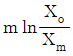
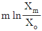
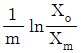
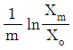
(정답률: 알수없음)
55. 소음공해에 대한 대책을 세울 경우 다음 중 가장 먼저해야 할 사항은?
- 계기로 측정한다.
- 대책의 목표치를 설정한다.
- 수응점에서의 규제기준을 확인한다.
- 귀로 판단한다.
(정답률: 알수없음)
56. 진동수 f와 각진동수 ω와의 관계식으로 옳은 것은?
- f=2πω
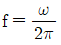
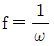
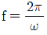
(정답률: 알수없음)
57. 감쇠 자유진동을 하는 진동계에서 감쇠 고유진동수가 25Hz, (비감성)고유진동수가 30Hz이면 감쇠비는?
- 0.25
- 0.35
- 0.45
- 0.55
(정답률: 알수없음)
58. x=4sin(4πt+π/2)로 표시되는 조화운동의 진동수는 몇 Hz인가? (단, x는 cm, t는 sec, 각도는 radian으로 측정된다.)
- 2Hz
- 4Hz
- 6Hz
- 8Hz
(정답률: 알수없음)
59. 흡음재료의 종류와 흡음특성에 대한 설명 중 가장 거리가 먼 것은?
- 섬유ㆍ발포재료 등의 다공질 재료는 보통 중ㆍ고음역에서 흡음성이 좋다.
- 석고보드, 금속판 등의 판상재료는 보통 중ㆍ고음역에서 흡음성이 좋다.
- 유공판 구조체의 흡음특성을 규정하는 주된 요소는 흡음주파수 영역과 흡음영역에서의 흡음율이다.
- 12~15mm 정도 두께의 목모시멘트판을 배후에 공기층을 두어 시공하면 중고음역에서 상당한 흡음력을 나타낸다.
(정답률: 알수없음)
60. 바닥면적이 5m×5m이고 높이가 -3m인 방이 있다. 바닥 및 천장의 흡음율이 0.3일 때 벽체에 흡음재를 부착하여 실내의 평균흡음율을 0.558 이상으로 하고자 한다면 벽체 흡음재의 흡음율을 얼마 정도가 되어야 하는가?
- 약 0.52
- 약 0.59
- 약 0.67
- 약 0.76
(정답률: 알수없음)
4과목: 소음진동방지기술
61. 소음진동규제법규상 특정공사의 사전신고 대상 기계ㆍ장비의 종류(기준)에 해당되지 않는 것은?
- 굴삭기
- 브레이커(휴대용을 포함한다.)
- 압쇄기
- 압입식 항타항발기
(정답률: 알수없음)
62. 소음진동규제법규상 농림지역의 야간 시간대의 철도교통진동의 한도기준으로 옳은 것은? (단, 2010년 1월1일부터 적용기준)
- 60dB(V)
- 65dB(V)
- 70dB(V)
- 75dB(V)
(정답률: 알수없음)
63. 소음진동규제법규상 시ㆍ도지사는 상시 측정한 소음ㆍ진동에 관한 자료를 언제까지 환경부장관에게 제출하여야 하는가?
- 매달 다음달 말일까지
- 매분기 다음달 말일까지
- 매반기 다음달 말일까지
- 매년 다음달 말일까지
(정답률: 알수없음)
64. 다음은 소음진동규제법규상 환경기술인의 교육사항에 관한 설명이다. ()안에 알맞은 것은?
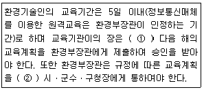
- ① 매년 12월 31일 까지, ② 매년 1월 31일 까지
- ① 매년 11월 30일 까지, ② 매년 1월 31일 까지
- ① 매년 12월 31일 까지, ② 매년 3월 31일 까지
- ① 매년 11월 30일 까지, ② 매년 12월 31일 까지
(정답률: 알수없음)
65. 소음진동규제법규상 과태료 부과기준 중 일반기준에서 위반행위의 횟수에 따른 부과는 해당 위반행위가 있은 날 이전 최근 몇 년간 같은 위반행위로 부과처분을 받은 경우에 적용하는가?
- 6월간
- 1년간
- 2년간
- 3년간
(정답률: 알수없음)
66. 소음진동규제법규상 환경기술인을 두어야 할 사업장 및 그 자격기준에서 소음ㆍ진동기사 2급(산업기사)이상의 기술자격 소지자를 두어야 하는 대상 사업장은 총동력 합계를 기준으로 할 때 몇 마력 이상인가?
- 2000 마력
- 3000 마력
- 4000 마력
- 5000 마력
(정답률: 알수없음)
67. 소음진동규제법규상 공공도서관의 부지경계선으로부터 50미터이내 지역의 도로교통진동의 한도기준은? (단, 야간시간대, 단위는 dB(V))
- 50
- 55
- 60
- 65
(정답률: 알수없음)
68. 소음진동규제법규상 사람을 운송하기에 적합하게 제작된 휘발유 경자동차의 제작자동차 소음허용기준은? (단, ① 가속주행소음(dB(A)), ② 배기소음(dB(A)), ③ 경적소음(dB(C))순이며, 가속주행소음은 직접 분사식(DI)디젤원동기를 장착한 자동차외의 자동차에 적용하며, 2006년 1월 1일 이후 제작자동차 기준)
- ① 77 이하, ② 103 이하, ③ 112 이하
- ① 76 이하, ② 102 이하, ③ 110 이하
- ① 75 이하, ② 102 이하, ③ 112 이하
- ① 74 이하, ② 100 이하, ③ 110 이하
(정답률: 알수없음)
69. 소음진동규제법규상 소음도 검사기관의 지정기준 중 시설 및 장비기준으로 옳지 않은 것은?
- 검사장:면적 400m2 이상(20m×20m 이상)
- 장비:다기능표준음발생기 1대(중심주파수대역:31.5Hz~16kHz)
- 장비:삼각대 6대(높이 10m 이상) 등 마이크로폰을 공중에 고정할 수 있는 장비
- 장비:녹음 및 기록장치 1대(6채널용)
(정답률: 알수없음)
70. 소음진동규제법규상 도시지역 중 준주거지역의 저녁시간대(18:00~24:00)의 공장소음 배출허용기준으로 옳은 것은? (단, 단위 dB(A))
- 40 이하
- 45 이하
- 50 이하
- 55 이하
(정답률: 알수없음)
71. 소음진동규제법규상 제작자동차의 소음허용기준으로 옳은 것은? (단, 2006년 1월 1일 이후 제작되는 자동차 기준)
- 총배기량 80cc이하인 이륜자동차의 배기소음은 100dB(A)이하, 경적소음은 100dB(C)이하이다.
- 직접분사식(DI)디젤원동기를 장착한 중대형 승용자동차의 가속주행소음은 77dB(A)이하, 경적소음은 112dB(C)이하이다.
- 직접분사식(DI)디젤원동기를 장착한 소형 화물자동차의 가속주행소음은 77dB(A)이하, 경적소음은 110(C)이하이다.
- 초애기량 175cc를 초과하는 이륜자동차의 배기소음은 100dB(A)이하, 경적소음은 110(C)이하이다.
(정답률: 알수없음)
72. 소음진동규제법규상 소음도 검사기관과 관련한 행정처분기준 중 소음도 검사기관이 보유하여야 할 기술인력이 부족한 경우 각 위반차수별(1차~3차)행정처분기준으로 옳은 것은?
- 조업정지10일-조업정지 30일-경고
- 조업정지30일-개선명령-등록취소
- 경고-경고-지정취소
- 개선명령-조업정지 30일-경고
(정답률: 알수없음)
73. 소음진동규제법규상 시ㆍ도지사가 환경부장관에게 제출하는 매년 주요 소음ㆍ진동관리시책의 추진상황에 관한 연차보고서에 포함될 내용으로 가장 거리가 먼 것은?
- 소음ㆍ진동전달경로 및 피해 산정
- 소음ㆍ진동발생원 및 소음ㆍ진동현황
- 소음ㆍ진동저감대책 추진실적 및 추진계획
- 소요재원의 확보계획
(정답률: 알수없음)
74. 소음진동규제법령상 공업지역 중 일반공업지역 및 전용공업지역의 도로변지역에서의 소음환경기준은? (단, 낮시간)06:00~22:00), 단위 Leq dB(A))
- 60
- 65
- 70
- 75
(정답률: 알수없음)
75. 소음진동규제법규상 소음배출시설기준으로 옳지 않은 것은? (단, 마력기준시설 및 기계ㆍ기구기준)
- 10마력 이상의 압축기(나사식 압축기는 20마력 이상으로 한다.)
- 30마력 이상의 금속가용용 인발기(습식신선기 및 합사ㆍ연사기를 포함한다.)
- 20마력 이상의 콘크리트관 및 파일의 제조기계
- 30마력 이상의 압연기
(정답률: 알수없음)
76. 소음진동규제법규상 녹지지역에서 옥외설치된 확성기의 주간(07~:00~18:00) 생활소음 규제기준은? (단, 기타조건 등은 고려하지 않는다.)
- 90dB(A) 이하
- 80dB(A) 이하
- 70dB(A) 이하
- 60dB(A) 이하
(정답률: 알수없음)
77. 소음진동규제법규상 자동차 종류에 따른 규모기준으로 옳지 않은 것은? (단, 2006년 1월 1일부터 제작하는 자동차 기준)
- 중형승용자동차:엔진배기량 800cc 이상, 10인승 이상 및 차량 총중량 2톤 이하로서 주로 사람을 운송하기에 적합하게 제작된 것
- 중대형승용자동차:엔진배기량 800cc 이상, 10인승 이상 및 차량 총중량 3.5톤을 초과하며 주로 사람을 운송하기에 적합하게 제작된 것
- 이륜자동차:엔진배기량 50cc 이상 및 빈 차 중량 0.5톤 미만으로 주로 1명 또는 2명 정도의 사람을 운송하기에 적합하게 제작된 것
- 소형화물자동차:엔진배기량 800cc 이상 및 차량 총중량 2톤 이하로서 주로 화물을 운송하기에 적합하게 제작된 것
(정답률: 알수없음)
78. 소음진동규제법령상 인증을 면제할 수 있는 자동차에 해당하지 않는 것은?
- 군용ㆍ소방용 및 경호 업무용 등 국가의 특수한 공무용으로 사용하기 위한 자동차
- 여행자 등이 다시 반출할 것을 조건으로 일시 반입하는 자동차
- 자동차제작자ㆍ연구기관 등이 자동차의 개발이나 전시 등을 목적으로 사용하는 자동차
- 항공기 지상조업용으로 반입하는 자동차
(정답률: 알수없음)
79. 소음진동규제법규상 소음발생 건설기계의 종류기준으로 거리가 먼 것은?
- 굴삭기(정격출력 19kW이상 500kW 미만의 것으로 한정한다.)
- 로더(정격출력 19kW이상 500kW 미만의 것으로 한정한다.)
- 발전기(정격출력 500kW 미만의 실내용으로 한정한다.)
- 공기압축기(공기토출량이 분당 2.83세제곱미터 이상의 이동식인 것으로 한정한다.)
(정답률: 알수없음)
80. 소음진동규제법규상 소음도 검사기관의 준수사항 중 소음도 검사기관의 장이 5년간 보존해야 할 서류목록으로 가장 거리가 먼 것은?
- 소음도 검사 관련 서류
- 소음도 검사기록부
- 소음도 검사 대행 등록증
- 소음도 검사 신청 서류
(정답률: 알수없음)
SPL = 20log(P/P0)
여기서 P는 주어진 음압의 실효치이고, P0은 기준 음압입니다. 기준 음압은 20μPa(마이크로파스칼)로 정의되어 있습니다.
따라서 주어진 문제에서 SPL을 계산하면 다음과 같습니다.
SPL = 20log(0.27/20x10-6)
= 20log(13,500)
= 82.6dB
따라서 정답은 "82.6dB"입니다.